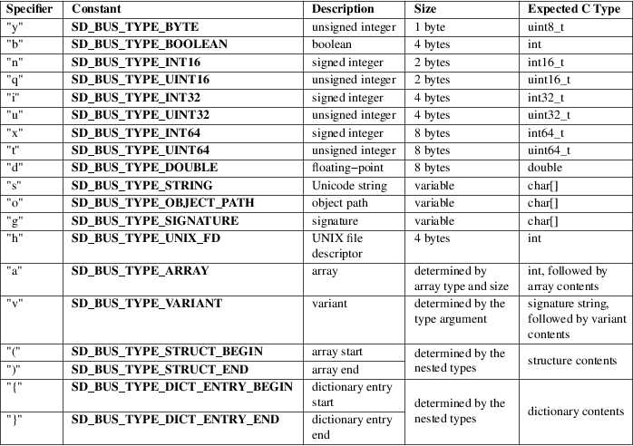

sd_bus_message_append, sd_bus_message_appendv − Attach fields to a D−Bus message based on a type string
#include <systemd/sd−bus.h>
|
int sd_bus_message_append(sd_bus_message *m, const char *types, ...); | |
|
int sd_bus_message_appendv(sd_bus_message *m, const char *types, va_list ap); |
The sd_bus_message_append() function appends a sequence of fields to the D−Bus message object m. The type string types describes the types of the field arguments that follow. For each type specified in the type string, one or more arguments need to be specified, in the same order as declared in the type string.
The type string is composed of the elements shown in the table below. It contains zero or more single "complete types". Each complete type may be one of the basic types or a fully described container type. A container type may be a structure with the contained types, a variant, an array with its element type, or a dictionary entry with the contained types. The type string is NUL−terminated.
In case of a basic type, one argument of the corresponding type is expected.
A structure is denoted by a sequence of complete types between "(" and ")". This sequence cannot be empty — it must contain at least one type. Arguments corresponding to this nested sequence follow the same rules as if they were not nested.
A variant is denoted by "v". Corresponding arguments must begin with a type string denoting a complete type, and following that, arguments corresponding to the specified type.
An array is denoted by "a" followed by a complete type. Corresponding arguments must begin with the number of entries in the array, followed by the entries themselves, matching the element type of the array.
A dictionary is an array of dictionary entries, denoted by "a" followed by a pair of complete types between "{" and "}". The first of those types must be a basic type. Corresponding arguments must begin with the number of dictionary entries, followed by a pair of values for each entry matching the element type of the dictionary entries.
sd_bus_message_appendv() is equivalent to sd_bus_message_append(), except that it is called with a "va_list" instead of a variable number of arguments. This function does not call the va_end() macro. Because it invokes the va_arg() macro, the value of ap is undefined after the call.
For further details on the D−Bus type system, please consult the D−Bus Specification [1] .
Table 1. Item type specifiers

For types "s" and "g" (unicode string or signature), the pointer may be NULL, which is equivalent to an empty string. For "h" (UNIX file descriptor), the descriptor is duplicated by this call and the passed descriptor stays in possession of the caller. See sd_bus_message_append_basic(3) for the precise interpretation of those and other types.
types
::= complete_type*
complete_type ::= basic_type | variant | structure | array |
dictionary
basic_type ::= "y" | "n" | "q"
| "u" | "i" | "x" |
"t" | "d" |
"b" | "h" |
"s" | "o" | "g"
variant ::= "v"
structure ::= "(" complete_type+ ")"
array ::= "a" complete_type
dictionary ::= "a" "{" basic_type
complete_type "}"
Append a single basic type (the string "a string"):
sd_bus_message
*m;
...
sd_bus_message_append(m, "s", "a
string");
Append all types of integers:
uint8_t
y = 1;
int16_t n = 2;
uint16_t q = 3;
int32_t i = 4;
uint32_t u = 5;
int32_t x = 6;
uint32_t t = 7;
double d = 8.0;
sd_bus_message_append(m, "ynqiuxtd", y, n, q, i,
u, x, t, d);
Append a structure composed of a string and a D−Bus path:
sd_bus_message_append(m, "(so)", "a string", "/a/path");
Append an array of UNIX file descriptors:
sd_bus_message_append(m, "ah", 3, STDIN_FILENO, STDOUT_FILENO, STDERR_FILENO);
Append a variant, with the real type "g" (signature), and value "sdbusisgood":
sd_bus_message_append(m, "v", "g", "sdbusisgood");
Append a dictionary containing the mapping {1=>"a", 2=>"b", 3=>""}:
sd_bus_message_append(m, "a{is}", 3, 1, "a", 2, "b", 3, NULL);
On success, these functions return a non−negative integer. On failure, they return a negative errno−style error code.
Errors
Returned errors may indicate the following
problems:
−EINVAL
Specified parameter is invalid.
−EPERM
Message has been sealed.
−ESTALE
Message is in invalid state.
−ENXIO
Message cannot be appended to.
−ENOMEM
Memory allocation failed.
These APIs are implemented as a shared library, which can be compiled and linked to with the libsystemd pkg-config(1) file.
systemd(1), sd-bus(3), sd_bus_message_append_basic(3), sd_bus_message_append_array(3), sd_bus_message_open_container(3)
|
1. |
D-Bus Specification |
https://dbus.freedesktop.org/doc/dbus-specification.html#type-system